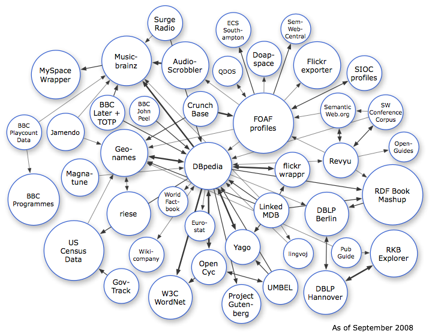

<map name="GraffleExport">
	<area shape=circle coords="55,332,42" href="http://www.geonames.org/ontology/">
	<area shape=circle coords="332,376,24" href="http://www4.wiwiss.fu-berlin.de/eurostat/">
	<area shape=poly coords="374,248,374,303,318,303,318,248,374,248" href="http://dbpedia.org/">
	<area shape=poly coords="569,330,569,382,518,382,518,330,569,330" href="http://www4.wiwiss.fu-berlin.de/dblp/">
	<area shape=circle coords="451,350,29" href="http://www.cycfoundation.org/">
	<area shape=circle coords="333,181,29" href="http://www.cycfoundation.org/">
	<area shape=poly coords="336,80,336,136,280,136,280,80,336,80" href="http://dbtune.org/last-fm/">
	<area shape=poly coords="121,95,121,152,63,152,63,95,121,95" href="http://www.rdfabout.com/demo/census/">
	<area shape=circle coords="274,38,29" href="http://www.cycfoundation.org/">
	<area shape=circle coords="39,220,29" href="http://www.cycfoundation.org/">
	<area shape=circle coords="562,183,29" href="http://ontoworld.org/">
	<area shape=circle coords="287,335,24" href="http://www4.wiwiss.fu-berlin.de/factbook/">
	<area shape=circle coords="404,411,29" href="http://www.cycfoundation.org/">
	<area shape=circle coords="486,282,29" href="http://www4.wiwiss.fu-berlin.de/flickrwrappr/">
	<area shape=poly coords="234,226,234,282,178,282,178,226,234,226" href="http://www.geonames.org/ontology/">
	<area shape=poly coords="474,169,474,240,403,240,403,169,474,169" href="http://www.foaf-project.org/">
	<area shape=circle coords="576,420,24" href="http://www4.wiwiss.fu-berlin.de/eurostat/">
	<area shape=circle coords="466,478,29" href="http://www.cycfoundation.org/">
	<area shape=poly coords="239,330,239,381,188,381,188,330,239,330" href="http://riese.joanneum.at/">
	<area shape=poly coords="683,394,683,449,628,449,628,394,683,394" href="http://www.rkbexplorer.com/">
	<area shape=circle coords="378,118,24" href="http://qdos.com/">
	<area shape=poly coords="555,80,555,135,500,135,500,80,555,80" href="http://apassant.net/blog/2007/12/18/rdf-export-of-flickr-profiles-with-foaf-and-sioc/">
	<area shape=circle coords="240,184,24" href="http://dbtune.org/bbc/peel/">
	<area shape=circle coords="496,422,24" href="http://www.lingvoj.org/">
	<area shape=circle coords="347,445,29" href="http://www.cycfoundation.org/">
	<area shape=circle coords="243,424,29" href="http://dbpedia.openlinksw.com/wikicompany/resource/Wikicompany">
	<area shape=poly coords="309,469,309,521,257,521,257,469,309,469" href="http://www.w3.org/TR/wordnet-rdf/">
	<area shape=poly coords="158,382,158,452,87,452,87,382,158,382" href="http://www.rdfabout.com/demo/census/">
	<area shape=circle coords="201,476,29" href="http://www.govtrack.us/">
	<area shape=circle coords="672,244,24" href="http://openguides.org/">
	<area shape=circle coords="439,97,29" href="http://doapspace.org/">
	<area shape=circle coords="178,187,29" href="http://bbc-hackday.dyndns.org:2825/">
	<area shape=circle coords="388,49,29" href="http://id.ecs.soton.ac.uk/docs/">
	<area shape=circle coords="492,47,24" href="http://projects.semwebcentral.org/">
	<area shape=circle coords="606,121,29" href="http://sioc-project.org/">
	<area shape=poly coords="567,461,567,513,516,513,516,461,567,461" href="http://dblp.l3s.de/d2r/">
	<area shape=circle coords="108,219,31" href="http://dbtune.org/jamendo/">
	<area shape=circle coords="132,295,31" href="http://dbtune.org/magnatune/">
	<area shape=circle coords="210,100,41" href="http://fgiasson.com/blog/index.php/2007/05/22/browsing-musicbrainzs-dataset-via-uri-dereferencing/">
	<area shape=circle coords="401,506,32" href="http://www4.wiwiss.fu-berlin.de/gutendata/">
	<area shape=circle coords="567,267,29" href="http://revyu.com/">
	<area shape=circle coords="653,324,50" href="http://sites.wiwiss.fu-berlin.de/suhl/bizer/bookmashup/">
	<area shape=circle coords="642,186,29" href="http://data.semanticweb.org/">
</map>

